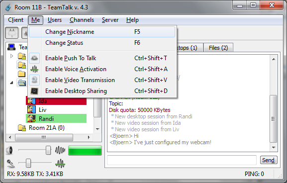
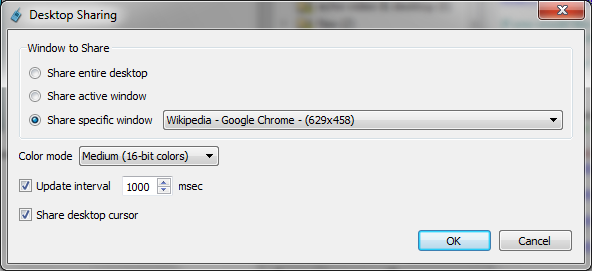
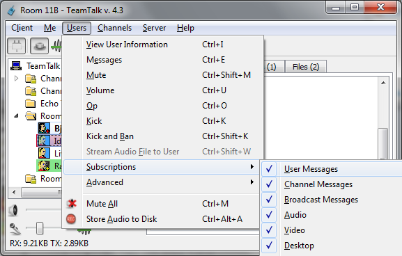
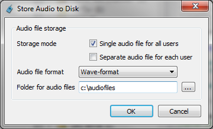
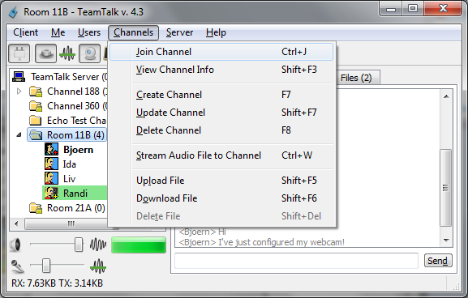
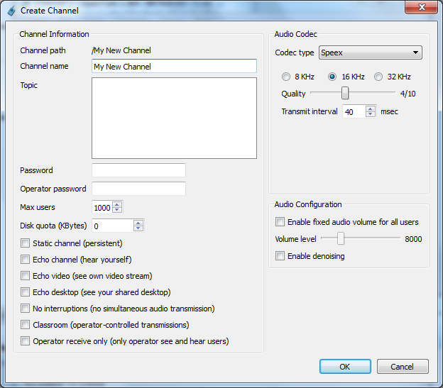
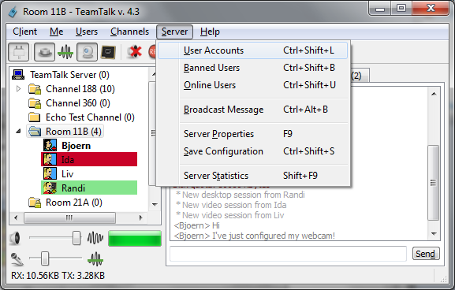
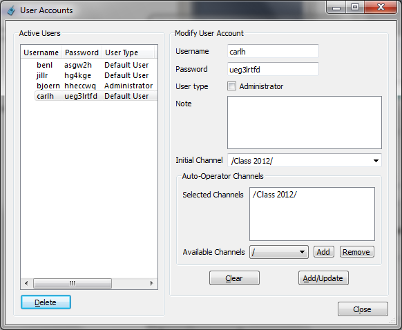
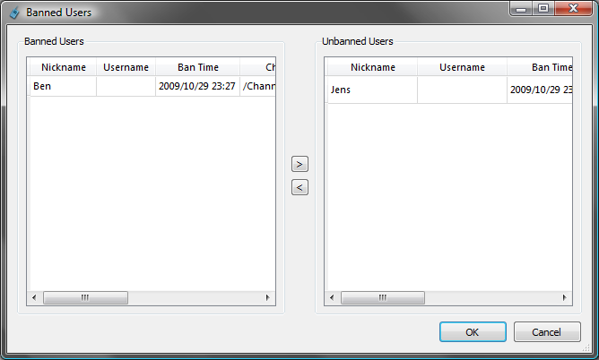
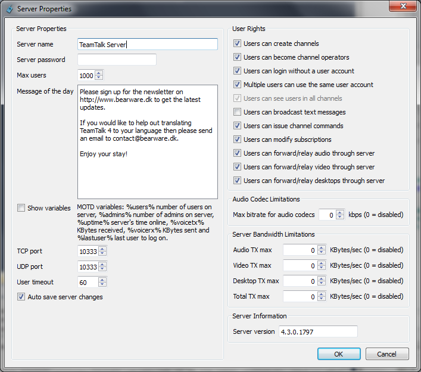

Please read section
TeamTalk
Preferences
for a guide on how to configure TeamTalk.
Me-Menu
The menu items in the menu group
Me are options you
want to
perform on
yourself. The possible options are shown here.

Each of the menu items in the
Me-menu are
described here:
- Change Nickname
- The will change your name on the server. Your
current nickname
is the one shown in bold in the channels view.
The
nickname
is
simply
a
display
name.
It
has
no
relation
to
your
username
(if
you
have
a
user
account).
- Change Status
- This is used to change your status mode, like e.g. Available,
Away, Question-mode and set a message
regarding
your current status.
- Enable Push To Talk
- Push To Talk is a key combination you need to hold
down
whenever you are talking. Using a Push To Talk
key combination is
especially usefull if you are using speaker and have
problems with
echos.
- Enable Voice Activation
- Instead of using Push To Talk
one
can have TeamTalk detect when
you are talking and then start transmitting.
- Enable Video Transmission
- Enable this item to start transmitting video to
other users in
your channel. Note that you need to configure your web
camera before
doing this. The Quick Start
section explains how to do this.
- Enable Desktop Sharing
- Share an application on your desktop with other
users in your
channel. This can e.g. be used for doing a
presentation. See the Desktop
Sharing dialog for more information.
Push To Talk Dialog
Using Push To Talk is a good way to ensure people do not
overlap each
other when they are talking and to avoid echos from
speakers. To set up
a hotkey simply hold down the keys you want to use as your
key
combination and release them all again. The Push To Talk
dialog will
show the keys you're holding down like here.
Using
Ctrl is a good choice for a Push To Talk
key. Note
that using regular keys can make Windows beep unlike when
using
non-modifier keys like
Ctrl,
Alt,
Shift.
Therefore
Ctrl or
Alt or
Shift
is recommended.
Enable Desktop Sharing Dialog
The window of an application on your desktop can be shared
with other
users in the same channel. This can be used for doing a
presentation in
an eLearning scenario. The Desktop Sharing dialog is shown
here:

Each of the items in the dialog are explained here:
- Share entire desktop
- Instead of sharing only one application you can
share your
entire desktop. Note that this may require a lot
of bandwidth usage.
- Share active window
- Share the window on your desktop which currently
have keyboard
and mouse focus. This option is useful if you
intend to show several
application windows during your presentation.
- Share specific window
- Only share a single application window and it
has to be the one
with the title specified in the selection box.
- Color mode
- The more colors you use for showing your
application the better
it looks, but it also requires mode bandwidth.
- Update interval
- Enable this option if the window you're sharing
changes during
your presentation. TeamTalk will then update the
window on a timely
basis.
- Share desktop cursor
- Enable this option if remote users should be
able to see where
your mouse cursor is point to.
Users-Menu
The menu items in the
Users-menu are used for
changing the
settings of other users and interacting with them. The
Users-menu is
shown here:

Each of the menu items in the
Users menu are
described here.
A user has to be selected in the
channels
view
for the
Users menu items to be active.
- View User Information
- Use this menu item to get extended information about
a user,
like e.g. username, user type and packet reception.
- Messages
- The menu item is for sending user to user text
messages. A
message dialog will pop up on the user's computer when
you send him a
message. This option can however be disabled in the Display tab in Preferences.
- Mute
- Mute the user so you will not hear audio from this
person. Note
that you will still receive audio data from the user.
To also disable
this look in the Subscriptions
section.
- Volume
- If a user is either too loud or too low one can use
the volume
dialog to turn the volume up and down. Most users
would probably prefer
to use the volume controls in the Advanced-menu.
- Op
- If one logged on to the server as administrator or
one is
already operator of a channel it's possible to make
other people in the
channel operators. When creating
a channel
one can also set an Operator
password which can be used with the
/op
channel command
to become operator again. Type the /help
channel command
to get other options.
- Kick
- Kick the user out of the channel.
- Kick and Ban
- Kick the user of the server and ban the user's
IP-address. Only
administrator can ban users.
- Stream Audio File to User
- Use this option to stream an wave-file to a user.
Only
administrators can use this option and the
administrator is not allowed
to be in the same channel. To stream an audio file to
the current
channel use the Channels-menu's
option
to stream audio files.
- Subscriptions
- Advanced
- Mute All
- Mute the sound from all users.
- Store Audio to Disk
Subscriptions-Menu
Subscriptions are used for ignoring certain data or events
from a user.
If e.g. you do not want to receive text messages from a
certain user
you can tell the server that you want to unsubscribe text
messages from
that user.
Each of the menu items in the
Subscriptions menu
are
described here.
- User Messages
- If checked you accept text messages from this user.
- Channel Messages
- If checked you accept channel text messages from
this user.
- Broadcast Messages
- If checked you accept broadcast messages from this
user. Only
administrators can by default broadcast text messages.
- Audio
- If checked you accept audio from this user. Unlike Mute
in Users-menu
disabling this will
also stop the user from
sending audio data to you.
- Video
- If checked you accept video from this user.
Unsubscribing video
is the same as pressing the minus button in the Video-tab.
- Desktop
- If checked you accept shared desktop windows from
this user.
Unsubscribing desktop is the same as pressing the
minus button in the Desktops-tab.
- Intercept User Messages
- Receive all the user's text messages, both to use
and to all
other users the user is sending to. In other words
this is like spying
on the user. Only administrators can do this.
- Intercept Channel Messages
- Receive all the user's channel text messages, even
if you're
not in the user's channel. Only administrators can do
this.
- Intercept Audio
- Receive audio from this user, even if you're not in
the same
channel. Only administrators can do this.
- Intercept Video
- Receive video from this user, even if you're not in
the same
channel. Only administrators can do this.
- Intercept Desktop
- Receive shared desktop windows from this user, even
if you're
not in the same channel. Only administrators can do
this.
If there's certain subscriptions you always want to have
disabled by
default you can set these in the
Connection-tab
of the
Preferences dialog.
Advanced-Menu
This main purpose of the
Advanced-menu is to
provide
keyboard shortcuts to common tasks.
Each of the menu items in the
Advanced-menu are
described
here.
- Increase Volume (+10)
- This is basically a shortcut to Volume in
Users-menu.
- Lower Volume (-10)
- This is basically a shortcut to Volume in
Users-menu.
- Store User(s) for Move
- Store the selected users so they can be moved to
another
channel.
- Move User(s)
- Move the selected users to the selected channel.
- Allow Voice Transmission
- When a channel is configured in Classroom
mode this menu item can be checked to allow the user
to talk in the
channel. This menu item is included due to its
keyboard shortcut.
- Allow Video Transmission
- When a channel is configured in Classroom
mode this menu item can be checked to allow the user
to send video to
the channel. This menu item is included due to its
keyboard shortcut.
- Allow Desktop Transmission
- When a channel is configured in Classroom
mode this menu item can be checked to allow the user
to share desktop
windows to the channel. This menu item is included due
to its keyboard
shortcut.
Store Audio to Disk Dialog
Conversations with other users can be stored to audio files
using the
Store
Audio
to
Disk item in the
Users-menu
or
pressing the recorder button in the toolbar. The follow
dialog will
then appear:

Each of the items in the audio storage dialog are explained
here:
- Storage mode
- Single audio file for all users
- Audio from all users in your channel is merged
into a single
file.
- Separate audio file for each user
- Each user in your channel will have a separate
audio file
every time the person starts talking.
- Audio file format
- The file format to use for storing audio files. By
default only
Wave-format is support but if you download the LAME
MP3 encoder you can
store to MP3 format by placing the lame_enc.dll
file in the
same directory as the TeamTalk executable. lame_enc.dll
is
not included in the TeamTalk distribution due to MP3
licensing.
- Folder for audio files
- The file name for the audio files is generated
automatically
but the folder for storing the files has to be
specified in this field.
Channels-Menu
The menu items in the
Channels menu become
available when you
select a channel in the
channels
view. All
the channel options are shown here:

Each of the menu items in the
Channels menu are
described
here.
- Join Channel
- Join the currently selected channel.
- View Channel Info
- View channel information about the selected channel.
Details
about a channel are described in Create
Channel Dialog.
- Create Channel
- Update Channel
- Update an existing channel. Only administrators and
channel
operators can change the settings of an already
existing channel. Note
that it is not possible to change the audio codec of a
channel when
there are users in the channel. Details about a
channel is described in Create
Channel Dialog.
- Delete Channel
- Delete the selected channel. Only administrators can
do this.
- Stream Audio File to Channel
- Replace your microphone input with a wave-file.
People in your
channel when then hear the .wav file and no you. Click
this menu item
again to stop the audio file. Currently only .wav
files are supported.
- Upload File
- Upload a file to your channel. To upload a file a
user must
have a user account on
the server. An
administrator can upload a file
to any channel. Read section Files-tab
for
more information on handing files. Note that the
channel must have a
disk quota to upload a file. The disk quota is
explained in section Create
Channel Dialog.
- Download File
- Delete File
Create Channel Dialog
To chat with other users in TeamTalk one has to either
create a channel
or join an existing channel. A new channel can be created by
pressing
F7 and the following dialog will show up:

Each of the fields in the create channel dialog are
described here:
- Channel Path
- Each channel can have subchannels which again can
have
subchannels. In TeamTalk channels are separated with
/
and the full path of your new channel will be
displayed here.
- Channel name
- The name of your new channel. Ensure that
/
is
not in the name.
- Topic
- Each channel can have a topic which both users who
are in the
channel and who are not in the channel can read. Only
administrators
and channel operator can change the topic of a channel
once it has been
created.
- Password
- The password required to join the channel
(optional).
- Operator password
- The first person to create a new channel will
automatically
become operator of that channel. This means the user
can kick people
out of the channel and update its settings later on.
If the person
leaves the channel at some point and comes back that
person can click
the Op item in the Users-menu
to become
operator again.
- Max users
- The maximum number of users allowed in the channel.
This field
is only available to administrators.
- Disk quota (KBytes)
- The maximum number of KBytes available for file
storage in the
channel. This field is only available to
administrators. The default
value for Disk Quota is changed in Server
Properties.
- Static channel (persistent)
- By default a channel disappears after the last user
leaves the
channel. Administrators can, however, create channels
which will
persist on the server even when all users have left.
- Echo channel (hear yourself)
- This type of channel can be used to do an echo test,
so you can
hear yourself.
- No interruptions (no simultaneous audio
transmission)
- If this option is enabled only one person can talk
in the
channel. In other words where will be no overlapping
conversations. To
talk in this type of channel you must wait until the
channel becomes
"silent". In Sound
Events
in Preferences there's an option to hear a sound when
a
channel is "free for chat".
- Classroom (operator-controlled transmission)
- If this option is enabled the channel operator can
control who
is allowed to talk, send video and share desktops in
the channel.
- Echo video (see own video stream)
- To option is mainly included to test the video
encoding
properties. A user is able to see how the person's
video looks after it
has been encoded.
- Echo desktop (see your shared desktop)
- If desktop sharing is
enabled have
his option enabled make it possible to see the window
which is being
shared with other users.
- Operator receive only
(only operator see and hear users)
- This channel type can be used for reducing network
traffic when e.g. TeamTalk is used for teaching. Only
server administrators and operators of a channel will
see and hear users in the channel.
- Codec Type
- In TeamTalk 4 each channel must specify which audio
codec all
users in the channel must use to join the channel.
TeamTalk currently
supports Speex and CELT. Speex is
recommende if you
just want to talk to other people, whereas CELT
is
recommended if you also want to hear music in the
channel. CELT
has an option to use Stereo but be aware
when choosing this
because many people do not have a microphone which
supports stereo and
can therefore not talk in the channel. Therefore Mono
is
recommended.
- Quality
- Increasing the quality will require more bandwidth
but the
sound quality will get better. Ensure to use a setting
which is not
higher than everyone you want to talk to have an
Internet connection
which supports the required bandwidth.
- Enable fixed audio volume for all users
- In most cases users have microphones with different
audio
volume levels which makes some users louder than
others. Enabling this
option ensures that all users in the channel speaks at
the same audio
volume level. This option is disabled by default
because it may reduce
audio quality. It is important to enable this option
if users are using echo
cancellation.
- Enable denoising
- Enable this option if all users should be forced to
remove
noise before transmitting audio to the channel. It is
important to
enable this option if users are using echo
cancellation.
Server-Menu
The
Server-menu is mainly intended for server
administrators
to administrate users who have access to the server. The
Server-menu
contains
the
items
shown
here:

Each of the menu items in the
Server-menu are
described here.
- User Accounts
- List all user accounts on the server and
administrate existing
ones. Only administrators can do this. More is
explained in the User
Accounts Dialog.
- Banned Users
- List all the users who are banned from the server.
Users are
banned based on their IP-address. Since user's
IP-addresses often
change from day to day it might be that a user who was
previously
banned can log on to the server again a day or two
later. Only
administrators can list the banned users on a server.
More is explained
in section Banned Users
Dialog.
- Online Users
- List all users who are currently connected to the
server, also
those who are not in a channel.
- Broadcast Message
- Broadcast a message to all users on the server. The
message
will appear in the Chat-window. Note that only
administrators can
broadcast messages.
- Server Properties
- See the server's properties and change them if
logged on as
administrator. More is explained in section Server
Properties
Dialog.
- Save Configuration
- Save the server's current state, i.e. save the
current server
properties and all static channels. If Auto save
server changes
is checked in Server Properties all new static
channels are save
automatically. Also channels which are deleted are
removed from the
server's configuration.
- Server Statistics
- Get incoming and outgoing bandwidth usage.
User Accounts Dialog
For optimal security it's best that all users who log on
your server
have a user account so it's possible to keep track of who is
doing what
on the server. Here is shown the
User Accounts-dialog.

The
Active Users list contains all the user
accounts on the
server. The remaining items are explained here:
- Username
- The username the new user account.
- Password
- The password of the new user account.
- User type
- Currently TeamTalk supports two types of users,
Default User
and Administrator. Administrator have full rights
to everything whereas
default users only have limited rights.
- Note
- Information about the user account can be put
here.
- Initial Channel
- Once the user with this account logs on to the
server the
person should be moved to the specified channel.
Note this requires
that the user is running TeamTalk 4.3 or later.
- Auto-Operator Channels
- Selected Channels
- The user with the specified user account will
automatically
become channel-operator in the listed channels.
- Available Channels
- The list of channels where a user can
automatically become
channel-operator. Only static
channels
are supported for auto-operator mode.
- Clear
- Clear the fields for the user account.
- Add/Update
- Create or update a user account.
- Delete
- Delete the seleced user account in the Active
Users
list.
Banned Users Dialog
The
Banned Users dialog shows the IP-addresses
which are
currently blocked by the server. Here is an example of users
which have
been banned on a server.

To remove a ban on a user simply move the user from the left
list to
the right list using the button with the greater than sign.
Server Properties Dialog
The
Server Properties-dialog shows what rights
users who are
logged on to the server has. An example is shown here (in
administrator
mode):

Each of the fields in the
Server Properties-dialog
are
described here:
- Server name
- The name which will appear on the root channel in
the channels view.
- Server password
- A password which users must specify to log on to the
server.
This password must be specified even if the user has a
user account on
the server.
- Max users
- The maximum number of users on the server. The
maximum
supported by TeamTalk is 1000.
- Message of the day
- The message of the day which users will see in the Chat-tab when they log on to the
server.
- Show variables
- If variables are used in the Message of the day
enable
this option to view them.
- TCP port
- The server's TCP port for commands. If changed the
new port
will not be used until next time the server is
restarted.
- UDP port
- The server's UDP port for audio and video data. If
changed the
new port will not be used until next time the server
is restarted.
- User timeout
- The number of seconds a user can stay on the server
without
having sent so-called keep-alive information to the
server. The
TeamTalk client will automatically try and make
contact with the server
at have of the server's User Timeout. If the
User Timeout
value is exceeded the server will drop (kick) the
user.
- Auto save server changes
- If checked the server will automatically save
changes to Server
Properties and store when new static channels
are created, updated
or removed.
- Users can create channels
- Users (non-administrators) can create channel, i.e.
they can be
in other channels than those which the server has
already configured.
- Users can become channel operators
- The first user who joins a new channel will become
channel
operator.
- Users can login without a user account
- Multiple users can use the same user account
- Two or more users can log in using the same user
account,
otherwise the user currently logged in will be kicked
off the server.
- Users can see users in all channels
- Users can see users in other channels. If disabled
users can
only see the users who are in their current channel.
Administrators
can, however, still see everyone. This settings cannot
be changed while
the server is running. This settings must be changed
using the server's
setup wizard explained in section Configuring
and
Installing
the
TeamTalk
Server.
- Users can broadcast text messages
- Default users, no only administrators, can broadcast
text
messages.
- Users can issue channel commands
- Users can issue channel commands, i.e. text messages
prefixed
with
/ are interpreted by the server as
channel commands.
- Users can modify subscriptions
- Users can forward/relay audio through server
- By default a user's audio data is sent from a user
to the
server and the server will then broadcast the audio
data on behalf of
the user
to all other users in the channel. If this option is
disabled the
TeamTalk application will enable peer to peer
connections and instead
broadcast the audio data itself. Note that some users
may not have
enough bandwidth available to broadcast their audio
data themselves.
- Users can forward/relay video through server
- By default a user's video data is sent from a user
to the
server and the server
will then broadcast the video data on behalf of the
user to all other
users in the channel. If this option is disabled the
TeamTalk
application will enable peer to peer connections and
instead broadcast
the video data itself. Note that some users may not
have enough
bandwidth available to broadcast their video data
themselves.
- Users can forward/relay desktop through server
- Enabling this option allows users to share desktop
applications
which can be viewed by other users in the same
channel. Unlike video
and audio, desktops cannot run in peer to peer mode.
- Max bitrate for audio codecs
- If users are allowed to create channels on a server
setting
this option can limit the bitrate of the audio codec
they are able to
specify.
- Audio TX max
- Setting this option can limit how much audio data
the server is
allowed to forward every second. If this value is
exceeded later audio
packets are simply dropped.
- Video TX max
- Setting this option can limit how much video data
the server is
allowed
to forward every second. If this value is exceeded
later video packets
are simply
dropped.
- Desktop TX max
- Setting this option can limit how much desktop data
is allowed
to be forwarded through the server. Unlike audio and
video packets,
desktop packets are retransmitted.
- Total TX max
- The overall maximum throughput the server is allowed
to use for
forwarding packets.
- Server version
- The version of the server which the user is
connected to.